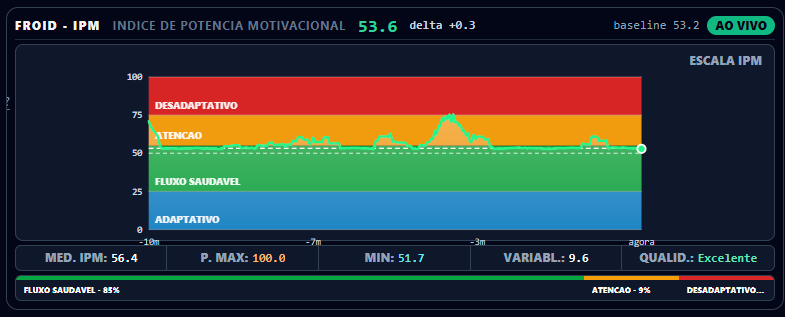
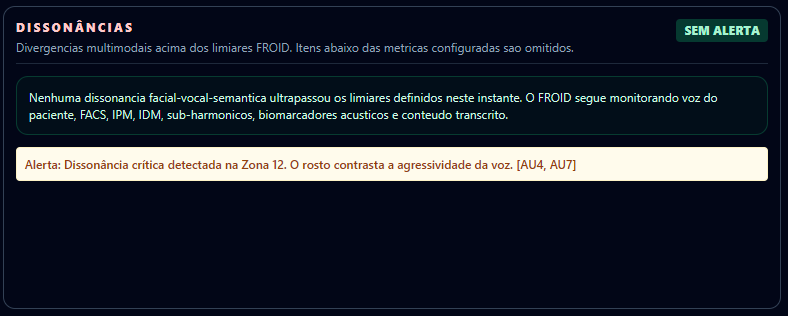
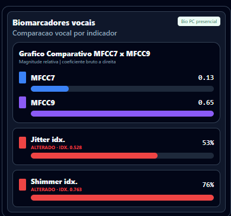
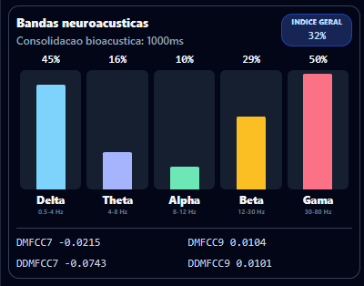
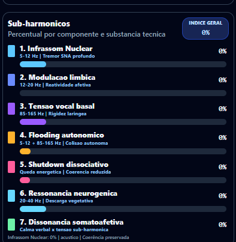
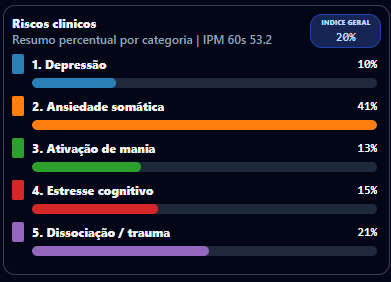
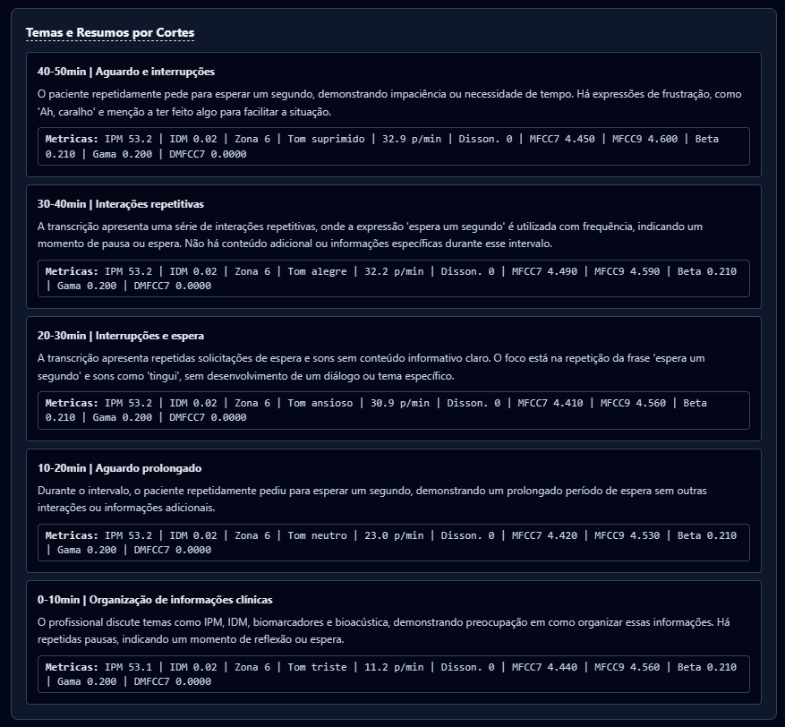

Démonstration interactive
Trois éléments interactifs : la carte des 12 Zones, les indices IPM et IDM réagissant à une dissonance simulée, et un rapport type anonyme. Toutes les données ici sont illustratives et synthétiques.
Cadre propriétaire FROID
Chaque zone correspond à une note de la gamme chromatique (de C2 à C#7) et à une dichotomie entre un état limitant et un état expansif. Cliquez sur une zone pour voir le détail. La physique (énergie spectrale) est réelle ; l'association thème↔bande est une heuristique produit — pas de la neuroscience publiée.
Indices en temps réel
Lancez une séance simulée. L'IPM (énergie/vitalité) oscille en continu ; l'IDM (cohérence) reste bas jusqu'à un moment de dissonance — lorsque le patient maintient un sourire volontaire sur une tension vocale — puis bascule vers la plage d'alerte.
Après la séance
À la fin, le professionnel reçoit un rapport structuré, toujours comparé à la propre ligne de base du patient. Exemple synthétique ci-dessous.
Ligne bleue : IPM au fil du temps. Marqueur rouge : pic d'IDM (incongruence parole–visage) à examiner par le clinicien.
À 31 min, une tension d'infra-tremblement vocal (5–12 Hz) a coïncidé avec un sourire de configuration volontaire (AU12 sans AU6) pendant un discours sur la reconnaissance professionnelle — signal d'une possible Dissonance Somatoaffective. Suggestion d'exploration, à l'appréciation du professionnel.
Galerie du produit
Un panorama des capacités d'analyse. Toutes les captures utilisent des données synthétiques ; plusieurs panneaux sont des heuristiques de visualisation propriétaires — une aide à la lecture, jamais un diagnostic. Voir Éthique et Science.







